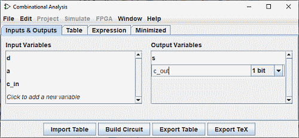
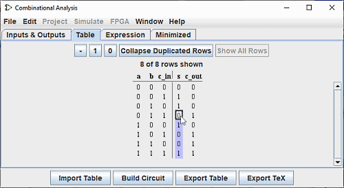

编辑真值表
打开组合分析窗口时，您会看到它由四个选项卡组成。
本页介绍前两个选项卡：输入与输出和表格。下一页将介绍最后两个选项卡：表达式和最小化。
输入与输出选项卡

输入与输出选项卡用于显示和编辑输入、输出列表，并指定它们的数据位宽。
要向列表中添加项目，可以使用上箭头或下箭头选择输入行，也可以单击“单击以...”并输入所需名称。上图示例中，输出列表里插入了“c_out”这一行。随后可以用鼠标在右侧定义该行的数据位宽。按Enter或Tab键结束输入。
如果要重命名已有行，双击文本即可修改。
要删除一行，请先使用鼠标或上箭头或下箭头选中该行，然后按Delete键。
要调整行的顺序，请按上述方法选中该行，然后使用Ctrl+上箭头或Ctrl+下箭头将其在列表中上移或下移。
所有操作都会立即影响真值表。
表格选项卡
在表格选项卡中，您会看到一组按钮和当前真值表。真值表按常规顺序排列：输入列在左侧，输出列在右侧。

单击输出列中的某个值即可编辑它。可以使用键盘上的0、1和-（表示未定义值），也可以使用顶部的-、1、0按钮来修改当前值。输入值后，光标会在该列中下移一行。使用上/下箭头或左/右箭头可以移动选择位置。
同样，您也可以在输入列中插入未定义值（-），或删除未定义值并替换为 0 或 1。
折叠重复行按钮可简化表格显示，显示所有行按钮则恢复完整表格。
您可以使用剪贴板复制和粘贴值。剪贴板内容可以粘贴到任何支持制表符分隔文本的应用程序中（例如电子表格）。
如果真值表基于现有电路，您可能会在输出列中看到一些带有“E”的红色方块。它们表示计算该行值时发生错误：可能是电路似乎在振荡，也可能是输出值本身为错误值（在 Logisim 电路中会显示为红色导线）。
导入/导出表格按钮
导出表格按钮可将真值表定义保存到文件，导入表格按钮可从文件重新加载真值表定义。
下一节： 创建表达式。